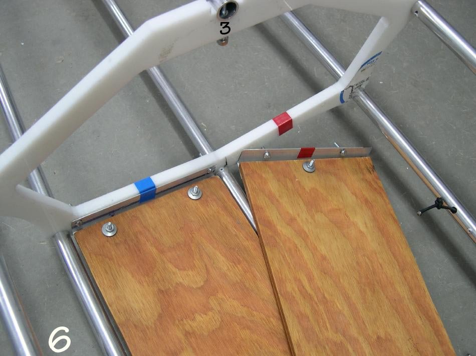

| Frame Assembly (7 of 8) | Menu Previous Page Next Page |
|
 Step 6 - Attach the wood floor to Cross Sections 3 and 4 with stainless (SS) machine screws. Section 3 and the floor are color coded to indicate the front of the floor and it's Left/Right orientation. Stainless (SS) machine screws/nuts are used to attach the deckridge to cross sections 3 and 4. |
|